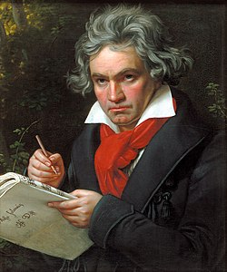

이름 : 베토벤
(Ludwig van Beethoven)
출생 : 1770년 12월, 독일 본
ps.베토벤은 음악의 악동이라 불리우며,
고전주의와 낭만주의의 전환기에 활동한 작곡가이다.
그는 귀가 안들린 것으로 유명하다.
대표곡
운명 교항곡
월광 소나타
비창 소나타
합창 교향곡
음원 감상(유튜브)
(재생되지 않을 경우, 하단에 YOUTUBE.COM을 클릭하여 유튜브에서 보시길 바랍니다.)